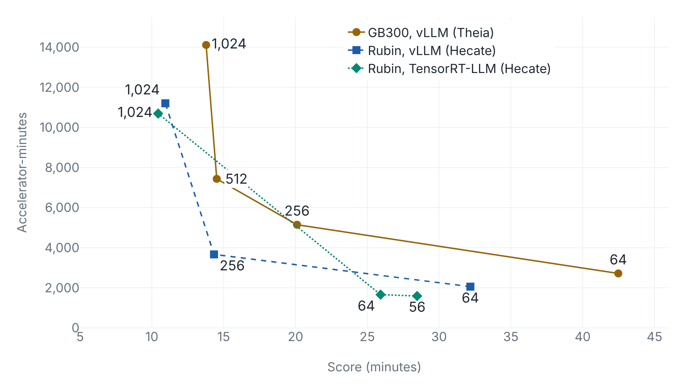

MLPerf's GRPO benchmark stops every clock at the earliest step allowed
In MLPerf Training v6.1's new Qwen3.5-397B test, each score is the wall time of a fixed quota of sandboxed coding episodes, and 16 times the GB300 GPUs cut that time only threefold.
Fixed work behind a time-to-quality score
In MLPerf's first reinforcement-learning post-training benchmark, the quality target never decided when a clock stopped. All 87 scored runs in MLPerf Training v6.1, which MLCommons published on 16 November,1 passed at the earliest checkpoint the rules allow anyone to evaluate,23 and so did all 24 reference runs.4 Each of the 29 results therefore times fixed work: for the 28 GPU entries, 10 GRPO steps on Qwen3.5-397B-A17B and 5,120 agent attempts at repairing a software repository.3 The entries differ in the hardware and software they spent on it.5
The whole GRPO loop runs on the clock
GRPO samples 16 attempts per task and scores each against the rest of its group, here with a binary reward and no KL penalty.24
Every stage of the loop, sandboxes included, falls between
run_start and run_stop. Checkpoints are
evaluated after the run, and run_stop takes the
weight-update timestamp of the first one that passes.2
Training cannot start until the first rollouts come back. In one 64-GPU GB300 run, 10.4 of 35.84 minutes passed before the first policy step began, and in one 1,024-GPU run, 4.0 of 12.93: about 30% of the clock both times.3 NVIDIA's documentation says the training pool sits idle while "the rollout buffer fills".6 Larger systems give generation a larger share of their GPUs, from 32 training and 32 generation at 64 GPUs to 256 and 768 at 1,024, MLCommons reports.7
The first allowed checkpoint passed every time
The rules forbid evaluating any checkpoint before step ⌈2.5 + 3,840 / GBS⌉, where the global batch size GBS counts trajectories, 16 per prompt.2
| GBS | Prompts per step | First eligible step | Trajectories by then | Used by |
|---|---|---|---|---|
| 256 | 16 | 18 | 4,608 | 6 reference |
| 512 | 32 | 10 | 5,120 | 6 reference, 28 GPU entries |
| 1,024 | 64 | 7 | 7,168 | 6 reference |
| 1,152 | 72 | 6 | 6,912 | 6 reference, 1 TPU entry |
The target, 0.69 pass@4, needs 174 of 251 held-out tasks solved by at least one of four attempts.4 Scored checkpoints solved 179 to 197, and all 87 runs stopped at their first eligible step.3 The 24 reference runs did the same, which leaves the reference convergence points with zero spread.8 A footnote in the rules gives the purpose: the benchmark "does late eval to hide variance and keep minimum number of submission runs low". Three runs are required, and with three the score is the median.2
How early any run could have passed is unknown, and the reference README says so.4 With shuffling disabled, every GPU run trains on the same first 320 of the 700 training tasks, in the same order.2
Sixteen times the GPUs for a threefold speedup
Fig. 2 plots NVIDIA's three scaling series, each on one chip and one inference backend, against accelerator-minutes, the score times the accelerator count. Every GPU point does the same 5,120 trajectories, so perfect scaling would draw flat lines.

Every line climbs to the left. On GB300 with vLLM, 16 times the GPUs took the score from 42.48 to 13.78 minutes, 42.48 / 13.78 = 3.08 times faster, while accelerator-minutes rose from 2,719 to 14,111. Doubling from 512 to 1,024 GPUs saved 5% of the time. The fastest result on the benchmark, Rubin with TensorRT-LLM at 10.44 minutes, used 10,691 accelerator-minutes, 6.7 times the 1,594 of the same chip and backend at 56 GPUs.5
Submitter matters less than size. Four companies ran 64 GB300 GPUs with TensorRT-LLM and finished 34.17 to 37.01 minutes, 8% apart,5 while the three runs inside one entry differed by 1.7% to 14.2%.3
What the vendor comparisons do not hold constant
| Claim | Official table | Not held constant |
|---|---|---|
| NVIDIA: Vera Rubin 10.44 minutes, GB300 13.78, both at 1,024 GPUs | 13.78 / 10.44 = 1.32 | Backend: TensorRT-LLM against vLLM. vLLM on both gives 13.78 / 10.94 = 1.26 |
| NVIDIA: Vera Rubin 1.4x over optimized GB300 NVL72 at 64 GPUs | Nebius VR200 against Google GB300: 34.17 / 24.82 = 1.38 | Submitter. NVIDIA's own 64-GPU pairs give 1.43 (TensorRT-LLM) and 1.32 (vLLM) |
| Google: 640 Ironwood TPUs reached the target in 18.02 minutes | Matches 6.1-0023. Google's footnote gives the ID as 6.1-0017 | The work: 6 steps and 6,912 trajectories at GBS 1,152 |
No comparison holds two quantities constant, because the table does not record them. The rules count "any dedicated CPU capacity used for the sandbox" against submission scale,2 but the table counts accelerators only. NVIDIA's recipe runs sandboxes on the compute nodes' own CPUs,6 while Google's TPU entry drew on a separate 39,780-vCPU pool shared by concurrent runs.11 Rollout staleness, how many steps a trajectory may lag the policy, is each submitter's choice and unlogged: Google reports 2, NVIDIA's config defaults to 4.116 Google's statement that its training chips "waited under 3% of the time" cannot be checked against the official logs and covers only the 128 of 640 chips that do not run rollout.1011
Two v6.1 GRPO scores compare cleanly only when they share batch size, accelerator count and inference backend, and even then neither the sandbox CPUs nor the staleness setting is on record.
Sources
- MLCommons · MLPerf Training v6.1 results
- MLCommons · MLPerf training rules
- MLCommons · training_results_v6.1 logs
- MLCommons · LLM post-training reference README
- MLCommons · Training results explorer
- NVIDIA · GRPO implementation README
- MLCommons · MLPerf Training v6.1 insights
- MLCommons · GRPO reference convergence points
- NVIDIA · Vera Rubin NVL72 in MLPerf Training v6.1
- Google · Training performance benchmarks on TPUs
- Google · TPU7x system description